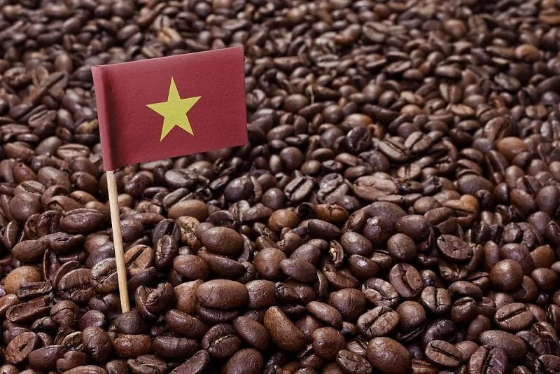
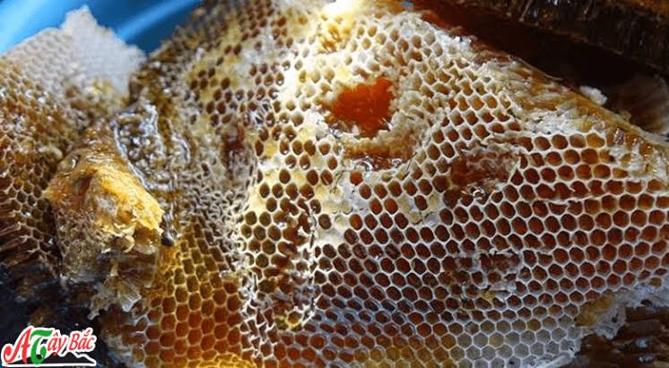
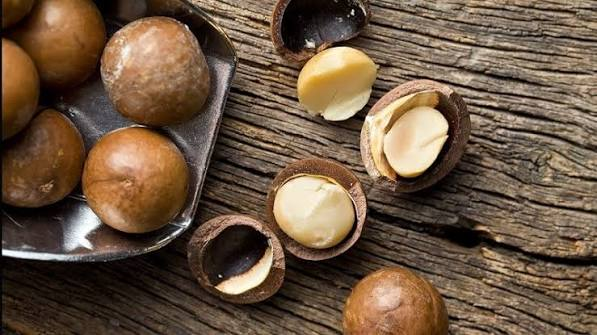
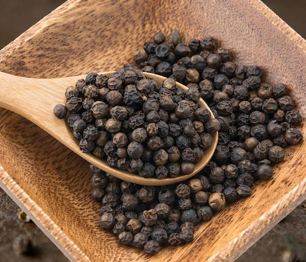
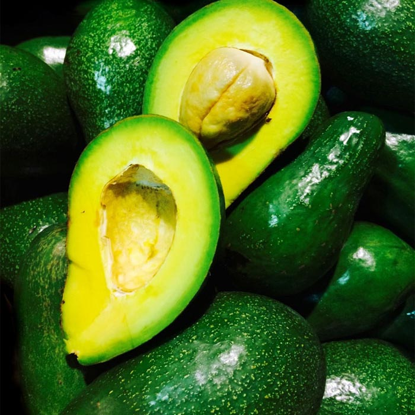
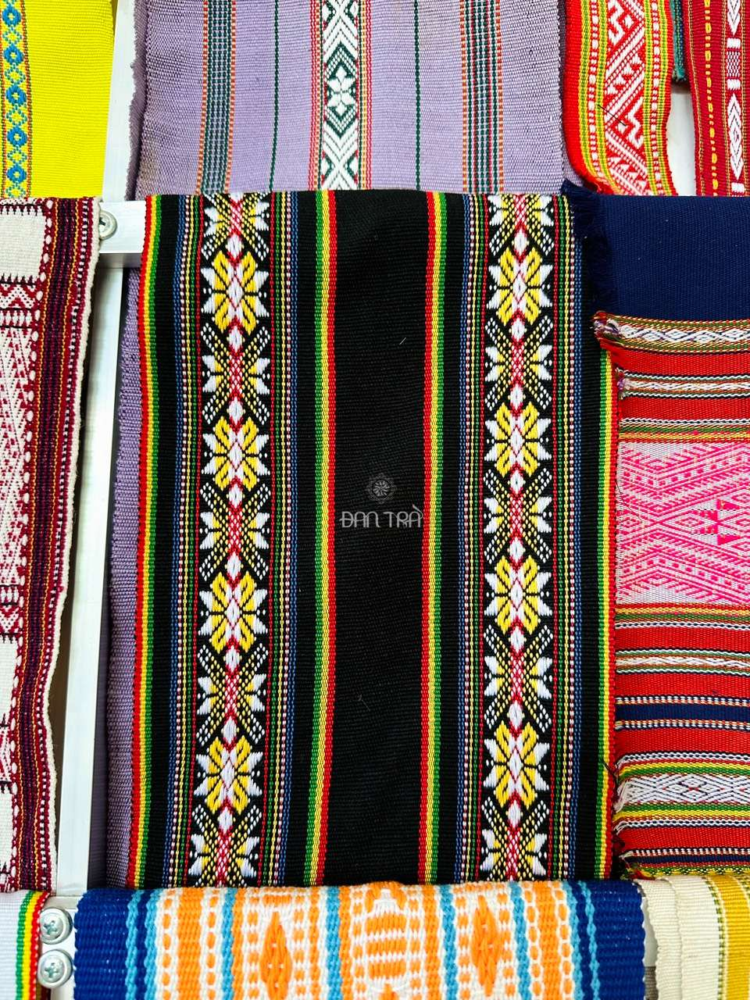

Cà Phê Robusta Đăk Lăk
hương vị đậm đà, mạnh mẽ, thể chất (body) dày và hàm lượng caffeine cao vượt trội.
170.000đ
Chuyên Cung Cấp Nông Sản Tây Nguyên Chính Gốc
Khám phá những sản phẩm đặc trưng được tuyển chọn từ vùng đất đỏ bazan màu mỡ.
hương vị đậm đà, mạnh mẽ, thể chất (body) dày và hàm lượng caffeine cao vượt trội.
170.000đ
là loại hạt dinh dưỡng đã qua chế biến nhiệt, có độ giòn béo, thơm ngon và giữ lại gần như toàn bộ hàm lượng dưỡng chất vốn có.
200.000đ
là đặc sản nổi tiếng của vùng đất Tây Nguyên nhờ chất lượng chắc mẩy, vị cay nồng và mùi thơm đặc trưng.
150.000đ
Cà phê rang xay đậm đà với hương thơm đặc trưng của vùng đất Buôn Ma Thuột.
180.000 VNĐ / 500g
Mật ong tự nhiên có vị ngọt thanh và hương thơm đặc trưng của hoa rừng đại ngàn.
250.000 VNĐ / 500ml
Hạt mắc ca thơm béo, giàu dinh dưỡng được tuyển chọn từ các vụ thu hoạch mới nhất.
220.000 VNĐ / 500g
Hạt tiêu cay thơm, đậm vị được trồng chăm sóc trên vùng đất bazan màu mỡ.
120.000 VNĐ / 500g
Bơ sáp dẻo, béo thơm tự nhiên, trái cây tươi trứ danh của tỉnh Đắk Lắk.
85.000 VNĐ / kg
Sản phẩm dệt thổ cẩm mang hoa văn truyền thống đậm nét văn hóa các dân tộc Tây Nguyên.
350.000 VNĐ / sản phẩm